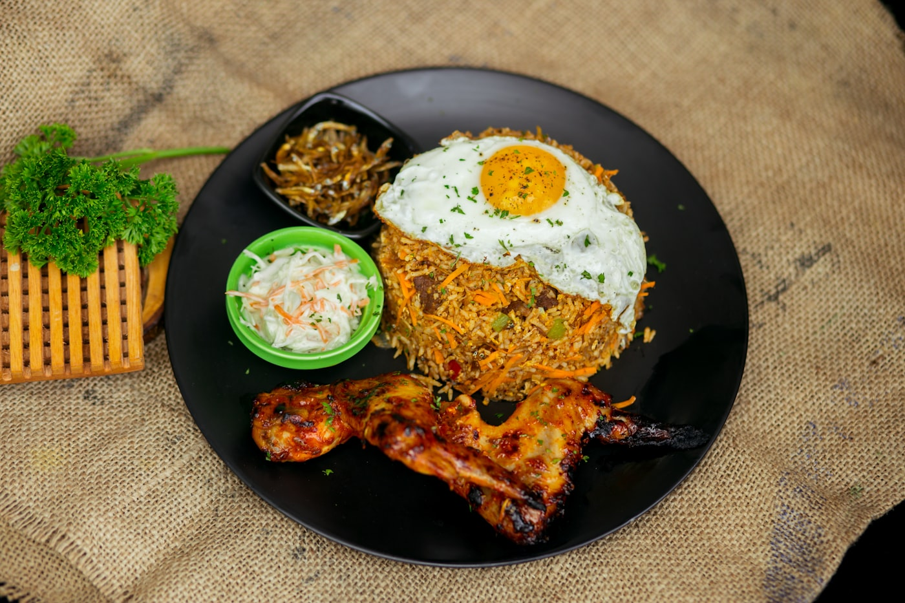
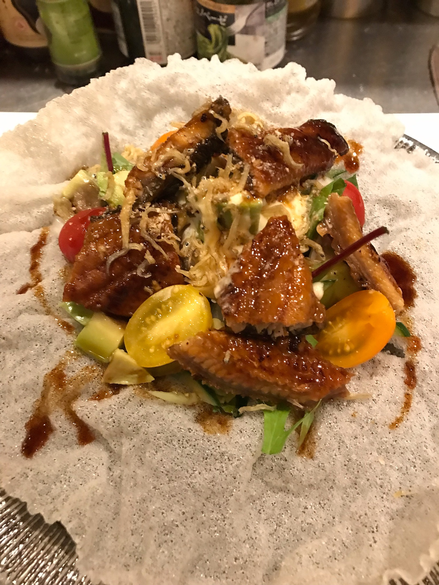
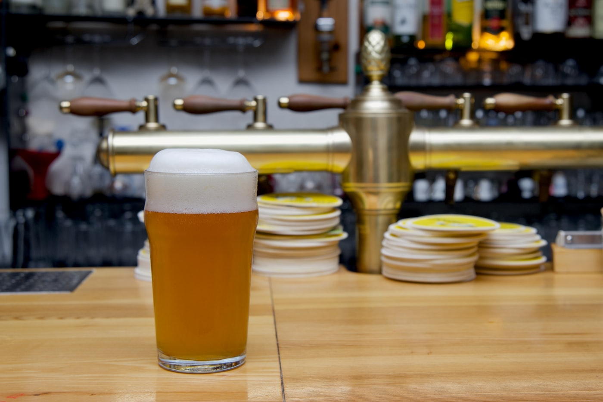
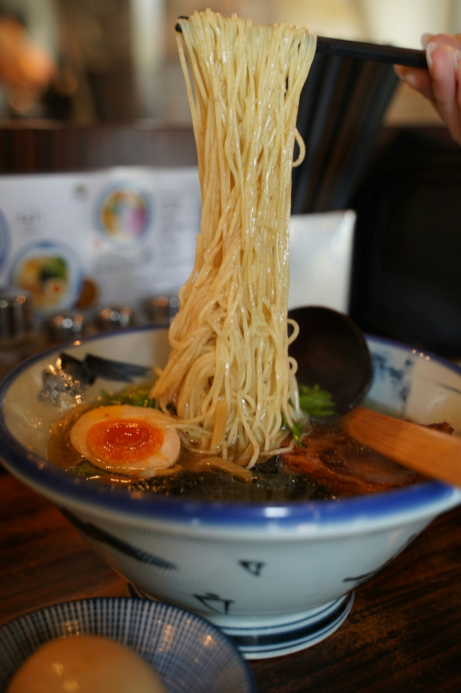

17:30火曜〜土曜
灯りがつく
お店が開くのは夕方五時半。アジアの料理とお酒で、一日の終わりから始まります。営業時間内なら、お弁当のテイクアウトも承っているそうです。

KAMIFUKUOKA · SINCE THE EVENING
夕方五時半から、深夜まで。
ふじみ野・上福岡のアジアン酒場です。
火・水は23:00まで／木〜土はラーメンまで
ABOUT
上福岡一丁目の一角で、夕方五時半に灯りがつきます。スープカレーやカオマンガイのようなアジアの料理と、一品料理、それにお酒。カウンターのある店です。
火曜と水曜は夜十一時まで。木曜から土曜は深夜まで開いていて、ラーメンも出ます。同じ看板でも、寄る時間によって出会う一杯が違う——そういう店です。
「エスニック料理かと思いますが、１品１品、手が込んでいて本当に美味しかったです。」— Googleマップのクチコミより

A NIGHT AT DEMODE
お店が開くのは夕方五時半。アジアの料理とお酒で、一日の終わりから始まります。営業時間内なら、お弁当のテイクアウトも承っているそうです。

ビール、焼酎、リキュール。黒板には、サラダといっぴん、ごはんものが並びます。フルーツ盛りやオードブルの相談にも応じているとのことです。

週の前半は夜十一時に店じまい。ラストオーダーはその三十分前とのことです。
木曜から土曜は、夜が長くなります。飲んだあとの〆に、ラーメンを出しているのはこの三日。閉店は一時ごろとのことですので、遅い時間はInstagramでご確認ください。
「木金土の夜はラーメンが食べられます」— Googleマップのクチコミより

一皿ずつ、手が込んでいる。
※背景の画像はイメージです
SHOP INFO
| 店名 | demode MORI '67 |
|---|---|
| 住所 | 〒356-0004 埼玉県ふじみ野市上福岡1-2-18 |
| 最寄り駅 | 東武東上線 上福岡駅 |
| 電話 | 049-267-0320 |
| 営業時間 | 火曜・水曜 17:30〜23:00 木曜〜土曜 17:30〜1:00ごろ ラストオーダーについて、Instagramには「Ｌ.O 30分前」とあります。 遅い時間の営業は変わることがありますので、Instagramをご確認ください。 |
| 定休日 | 日曜・月曜 |
| ご予算 | おひとり ￥3,000〜4,000 （Googleマップの利用者報告より） |
| ご利用 | 店内でのお食事のほか、営業時間内はお弁当のお持ち帰りも承っています。 フルーツ盛り・オードブルもご相談ください。 |
| @demodemori67 2026年5月の店頭の黒板には「インスタフォローでドリンク1杯サービス」と出ていました。 |